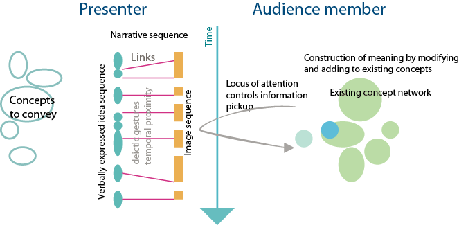

|
VTPD: Presentation linking Images and Words
A common format for presentation is using PowerPoint slides to provide a combination of images and words. These media engage two different "channels", visual and verbal, through which information is cognitively processed. It is critical to use the channel appropriate to different types of information and also to link information of the two types properly.
To convey a set of ideas a presenter constructs a narrative consisting of three kinds of elements
- A verbal sequence expressing ideas and concepts and reasons for believing them.
- An image sequence expressing both spatial and non spatial patterns.
- A sequence of links between visual and verbal materials consisting of deictic gestures, semantic commonalities, and temporal proximities. “Deictic gesture” is a fancy name for the act of pointing as a form of communication. This is the most common and effective way of linking images and spoken words.

An attentive and motivated audience constructs meaning from a presentation by linking the verbal content to the visual content and to existing conceptual schemas he or she has formed from prior experience.
The key to a successful presentation is that the locus of attention of audience members tracks the designed narrative sequence. In other words, audience members should be looking at parts of the image relevant to the argument and integrating verbal and visual information to construct new meanings in the way intended.
There are many ways in which this system can break down. Audience members may think ahead, this is especially likely if there are many words on the slides. Audience members may visually attend to irrelevant details on the visuals because of failure of the presenter to point out these links and because the slides contain attractive but irrelevant information. The audience member may already know the material or conversely the material may be too difficult for immediate assimilation because they lack foundational concepts. Also, the audience member may lack motivation, failing to see relevance to their personal circumstances.
Cognitive guideline: the most fundamental principle of multimodal presentation is that appropriate content be assigned to the visual and verbal channels. Verbal information should be primarily given in spoken works (not written on the screen). Visual information consisting of cognitive task relevant charts, diagrams and images should be shown as imagery.
Cognitive guideline: ensure adequate links between visual and verbal information in the form of deictic gestures, semantic commonalities and temporal proximities.
Cognitive guideline: motivate the material to show why the audience should be interested. This will involve constructing a model the audience’s motivations and knowledge.
Cognitive guideline: do not reproduce complex arguments in words on the screen. Doing this can greatly contribute to the speaker losing control of the cognitive thread of audience members, because people will read ahead at their own pace, missing things that the speaker is saying, and which are not on the slides.
Information Suitable for Images
Imagery information includes charts, diagrams and maps of various type as well as photographic images. Broadly speaking complex patterns can be expressed more efficiently using diagrams. For example, node link diagrams are used to show many structures ranging from company organization charts to the structure of computer software. For more detail consult a reference such as [1] or [2]. Some images, especially photographs can provide powerful motivational material.
Information Suitable for Words
Because of its rich grammatical structure, language is much better at conveying complex arguments, than diagrams. Terms such as: if, then, else, while, perhaps and because, have no counterparts in visualization although of course visual symbols can be constructed to stand for these concepts, but this simply becomes a poor substitute for written language. The exception is mathematics, where visual symbols are given exact precisely defined meanings. Words can also be used to tell stories which can be effective motivators.
References
[1] Ware, C. (2008) Visual Thinking for Design: Morgan Kaufman.
[2] Evergreen, S. (2011) Presenting Date Effectively: Communicating your findings for maximum impace. Sage, Los Angeles.
|